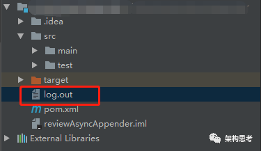
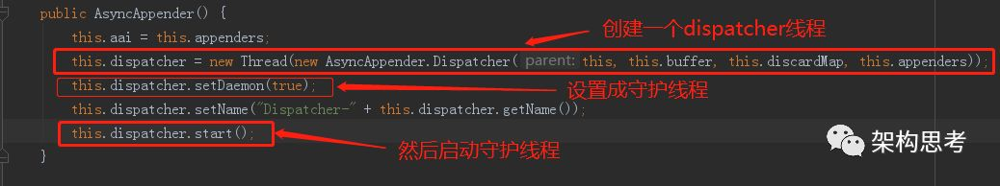

log4j源码探究
log4j是一种常用的日志框架，帮助我们打印日志，以便日后出现问题时通过查看日志来排查原因。
首先对log4j进行一次简单的应用展示。
第一步：在idea中新建一个maven工程，并在pom文件中导入依赖。
<dependencies><!-- https://mvnrepository.com/artifact/log4j/log4j --><dependency><groupId>apache-log4j</groupId><artifactId>log4j</artifactId><version>1.2.15</version></dependency></dependencies>
第二步：在resources目录下创建log4j.properties文件，配置log4j的属性。
# 定义rootLogger的日志级别为DEBUG，即优先级高于DEBUG的日志都会被记录下来# 定义rootLogger的appender的名称为FILElog4j.rootLogger = DEBUG, FILE# 定义FILE这个appender的类型为FileAppender，日志会被记录到指定的文件中log4j.appender.FILE=org.apache.log4j.FileAppender# user.dir 为当前工程目录的下的src目录log4j.appender.FILE.File=${user.dir}/log.out# Define the layout for file appenderlog4j.appender.FILE.layout=org.apache.log4j.PatternLayout
上述配置生成的log.out文件的位置如下图所示：

第三步：编写测试代码。
import org.apache.log4j.Logger;import java.io.*;import java.sql.SQLException;publicclassTest{publicstatic void main(String[] args)throwsIOException,SQLException{Logger logger = Logger.getLogger(Test.class.getName());logger.trace("Trace Message!");logger.debug("Debug Message!");logger.info("Info Message!");logger.warn("Warn Message!");logger.error("Error Message!");logger.fatal("Fatal Message!");}}
由于在log4j.properties文件中配置了logger的日志级别为DEBUG，所以只有9-12行的日志才会被记录到log.out文件中。结果如下图所示：

基本用法介绍完毕后，我们来探一探其实现原理。
log4j的核心组件有两个：
logger
appender
logger负责采集日志，然后将日志传递给appender，appender负责将日志通过IO操作写到指定的位置。
普通的appender，如FileAppender是同步操作的，性能较差。log4j中更强大的appender是AsyncAppender，它是异步操作的，性能有较大的提升。
AsyncAppender的核心原理就是开辟一片缓存区域，用于缓存日志；并运行一个守护线程程dispatcher，该守护线程从缓存区域中取出日志传递给挂在AsyncAppender上的同步appender，由同步appender将日志写入指定的地方。
首先看一下AsyncAppender的构造器：

AsyncAppender在append方法中处理日志（下面两张图都是append函数的代码，因为代码太长，所以截成两张图）：


守护线程dispatcher的核心是Dispatcher类，该类实现了Runnable接口，下面的代码是其核心的run方法：


ps:读源码一定要抓主逻辑，细枝末节先忽略:)